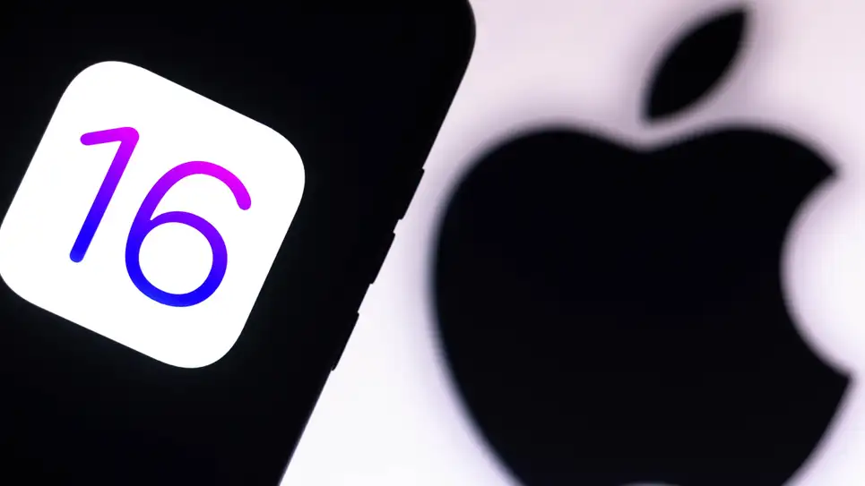

All the Hidden iOS 16 Features Worth Knowing About
You wouldn't have known about these features until you tried iOS 16 for yourself.

Apple announced a lot of new iOS 16 features for the iPhone during WWDC. If you were following along, you likely know all about the Lock Screen customization, revamped notification system, and the ability to edit and unsend messages, among other notable new options. However, there are plenty of hidden features Apple didn’t mention, either.
I’m going to start with the actual hidden features, the ones Apple flat-out ignored. The company always leaves features out of its keynote (there wouldn’t be enough time to cover them all), but they list most of the new options and changes on the preview site, as you can see here. While there are some excellent new features here that are worth exploring, I want to focus first on the ones that didn’t make this list.
These hidden features were all found by beta testers running the first developer beta for iOS 16. If you’re an Apple developer, or you want to become one for a fee, you can try out the software today, too. Otherwise, you can live vicariously through these testers until Apple releases the public beta for free next month.
Tapback works with SMS now
While I’d never expect Apple to adopt RCS—even though they totally should—iOS 16 does improve group chats with Android phones. As you likely know, when you “like” or “love” a message in one of these group chats, everyone gets the full message instead of the convenient icon you normally see in an iMessage thread. Rather than a “thumbs up” on the message “Want to see a movie tonight?” everyone gets: “Jake liked ‘Want to see a movie tonight?’”
This hell is no more, at least not with iOS 16. As long as your iPhone is updated, you’ll see Tapbacks appear on messages rather than the written-out texts everyone hates. Google already implemented this change on Android, so now neither side of the chat should have to deal with this issue (unless your iPhone doesn’t support iOS 16).
Your iPhone now supports Nintendo Switch controllers
It’s finally happening: With iOS 16, Apple is bringing Switch controller support to the iPhone. And yes, that includes both the Pro Controller and Joy-Cons. Now, if only we’d get an iPhone case with Joy-Con attachments (let me dream).
Audio source icons appear in Now Playing instead of cast
You might know you can change your iPhone’s audio source from the Now Playing’s widget. With the new update, this icon will show the current audio source instead of a generic casting button, which makes it clear where your audio is outputting. For example, if you’re using your AirPods Pro, you’ll see them appear in this window; if you switch to your HomePod, you’ll see it here instead.
This change is small, but it’s great for quickly identifying where your music is going to before you hit the play button. Plus, you’ll know if your AirPods really disconnected when you took them out of your ears.
See conversion options by tapping on the metric
When editing a document or note, you can tap on a metric to instantly convert it to something else. For example, if you tap on 50g, you’ll see a conversion to kilograms, pounds, and ounces. If you tap on $100, you’ll see options to convert into a different currency.
You can automatically change Apple Watch faces with Focus
One of the Lock Screen features mentioned during the keynote was the ability to change Lock Screen setups depending on your Focus. You can have a personal Lock Screen with a particular wallpaper and widget setup, while your work Focus shows a more professional background with work-related widgets.
Even though the company didn’t announce it, this same principle applies to Apple Watch—from the Watch app, you’ll be able to choose which watch faces appear during which Focuses.
Blur your Home Screen wallpaper, not just the Lock Screen
You might have seen iOS 16's option to blur the wallpaper on your Lock Screen, to create a fun depth effect. This option is also available on the Home Screen, as well, allowing you to visually separate your apps from the background.
iOS 16 can detect duplicate contacts
If your contacts list is like mine, it’s a mess. Chances are you have more than a couple duplicates in there, either because you mistakenly added a contact twice, or you’ve moved phones. IOS 16 will quietly alert you to these duplicates, and will give you the option to delete them if need be.
Easily delete contacts
If you’ve ever tried to tackle your tangled contacts list, you’ll know it’s a pain. To delete a contact in iOS 15, you have to open it, tap “Edit,” then scroll all the way down to find “Delete Contact.” To do this for each contact you want to remove is a tedious nightmare. Luckily, with iOS 16, there’s a new submenu option to delete contacts. Just press and hold on the contact entry, and you’ll find it.
Sort Playlists in Apple Music
Playlists are great, but in Apple Music, they’re fixed in the order you created them. If you want to change things up, you’ll have to open the editor and do it by hand. Now, with iOS 16, you can easily sort Playlists by title, artist, album, or release date.
Spotlight offers information about what’s currently playing
Speaking of music, you’ll see Spotlight offer additional context for the music currently playing on your iPhone. Swipe down on the Home Screen when listening to something, and you’ll see an option to learn more about the artist.
Type the number of copies you want to print
When printing on iPhone, you can now type the number of copies you want by hand. Previously, you needed to use the dials to choose the number.
You can AutoFill codes with a third-party authenticator app
In iOS 15, you can use the built-in authenticator app to AutoFill 2FA codes for your accounts. While you could download third-party options, you couldn’t use them for AutoFill. Now, you can.
You can disable “Lock to End Call”
In some ways, it’s a simple operation: When you’re done with your phone call, press the Side button to hang up. Easy! Too easy, maybe: If you’ve ever accidentally hung up on someone because you pressed the Side button, you can now disable the option in iOS 16's Phone settings.
Share an eSim number to another iPhone
If you want to move an eSim number to another iPhone, you need to do so from a restore, which isn’t particularly convenient. However, it seems iOS 16 introduces an easy way to transfer a number to another iPhone that’s nearby. It’s early stages, so we don’t yet know exactly how this works, but it’s a cool addition.
Instead of “No Signal,” you’ll see SOS
This change is a tiny one, but, apparently, you’ll now see “SOS” appear at the top of your display when you have no bars. The reason for the change isn’t clear, but one Redditor suggests perhaps it’s to indicate emergency services still work on your iPhone, even if you can’t place normal calls.
You can change fitness goals on your iPhone
Another small feature: You can now change your Apple Watch fitness goals on the iPhone’s Activity app. Previously, this option was only available on the watch itself.
Hidden features Apple did acknowledge
I want to quickly run through a handful of fun features that Apple did acknowledge in its full feature preview, but that might’ve gone under the radar of most people watching WWDC news:
• There’s now a haptic keyboard.
• You can enable Live Transcriptions during FaceTime calls.
• You can recover recently deleted messages for up to 30 days.
• You can lock your Hidden and Recent albums in Photos.
• You can now manage your wifi passwords.
• You can hang up phone calls with “Hey Siri.”
• You can pinch notifications to switch between expanded list view, stacked view, or count view.
• iOS asks for permission to paste from another app.